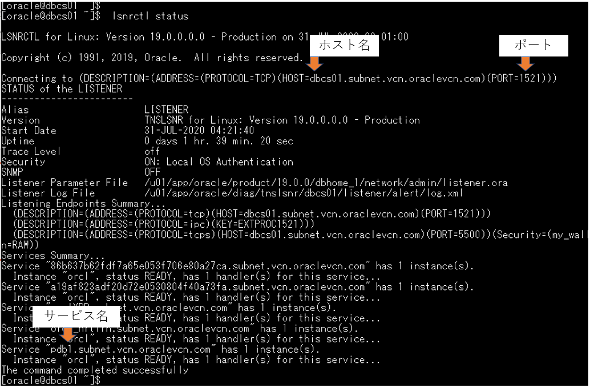

はじめに
Oracle Cloud Infrastructure データベース・サービス(DBCS)は、Oracle Cloud Infrastructure の上で稼働する Oracle Database のPaaSサービスです。
ユーザーはオンプレミスと全く同じOracle Databaseのソフトウェアをクラウド上で利用することができ、引き続きすべてのデータベース・サーバーの管理権限(OSのroot権限含む)およびデータベースの管理者権限を保持することができます。
この章では、作成済みの仮想クラウド・ネットワーク(VCN)にデータベース・サービスを1つ作成していきます。
前提条件 :
- Oracle Cloud Infrastructure チュートリアル を参考に、仮想クラウド・ネットワーク(VCN)の作成が完了していること
注意 チュートリアル内の画面ショットについては Oracle Cloud Infrastructure の現在のコンソール画面と異なっている場合があります
目次
所要時間 : 約30分
1. DBシステムの作成
-
コンソールメニューから データベース → ベア・メタル、VMおよびExadata を選択し、有効な管理権限を持つコンパートメントを選択します
-
DBシステムの作成 ボタンを押します
- 立ち上がった DBシステムの作成 ウィンドウの入力欄に、以下の項目を入力します
- コンパートメント - 任意 (集合ハンズオン環境を利用している場合は講師の指示に従って選択してください)
- DBシステムの名前 - 任意 (以降では dbcs01 として記載しています)
- 可用性ドメイン - 任意 (集合ハンズオン環境を利用している場合は講師の指示に従って選択してください)
- シェイプ - 任意 (集合ハンズオン環境を利用している場合は VM.Standard2.1 を選択してください)
SHAPEの選択時には、使用している環境のサービス・リミットに注意してください。初期状態ではサービス・リミットが0に設定されていて作成できないデータベース・サービスのシェイプも存在します。 サービス・リミットについて不明な方は OCIコンソールにアクセスして基本を理解する - Oracle Cloud Infrastructureを使ってみよう(その1) をご確認ください。
RAC を利用したい場合は VM.Standard2.2 以上を選択ください
-
合計ノード数 - 1
RACを利用したい場合はノード数を2に選択ください
- Oracle Database ソフトウェア・エディション - 任意
- ストレージ管理ソフトウェア - 任意（ハンズオンでは作業時間短縮のため、論理ボリューム・マネージャ を選択ください）
- ストレージの構成 - 256 を選択
- SSHキー・ペアの生成/SSHキー・ファイルのアップロード/SSHキーの貼付け - いずれかの選択肢よりSSHキーを追加します
- ライセンス・タイプ - 任意
- 仮想クラウド・ネットワーク - 第2章で作成した仮想クラウド・ネットワークを選択
- クライアントのサブネット - 任意のサブネットを選択（本ハンズオンでは、パブリック・サブネット（リージョン）を選択ください）
- ホスト名接頭辞 - 任意
- 拡張オプションの表示 - 任意（フォルトドメインの指定、タイムゾーンの設定が可能であることをご確認ください。
-
次をクリックします
- データベース情報の入力欄に、以下を入力します
- データベース名 - 任意（例 : orcl）
- 一意のデータベース名の接尾辞 - 任意
- データベースのバージョン - 19c
- PDB名 - 任意（例 :pdb1）
- パスワード - 任意 (sysスキーマのパスワードです。後から使用しますので、忘れずにメモしておいてください。例 : WelCome123#123# )
- ワークロード・タイプ - オンライン・トランザクション処理 (OLTP) を選択
- 自動バックアップ - 任意（ハンズオンでは選択なしのままで良いです）
- 拡張オプションの表示 - 任意（文字コードを選択できることを確認ください。）
- DBシステムの作成 をクリックします（DBシステムの作成がバックエンドで開始します。作業が完了するとステータスが PROVISIONING… から AVAILABLE に変わります）
2. DBシステムへのアクセス
作成したDBシステムに対して、sshでアクセスします。
-
画面右下の リソース タブから、ノード を選択し、パブリックIPアドレス に表示されているIPアドレスをメモします。
- 任意のターミナルソフトを起動し、以下の情報でssh接続します。
- IPアドレス - 上記ステップで確認したインスタンスの パブリックIPアドレス
- ポート - 22 (デフォルト)
- ユーザー - opc (DBシステムは、接続用に予め opc というユーザーが用意されています)
- SSH鍵 - インスタンスを作成する際に使用した公開鍵と対になる秘密鍵、集合ハンズオン・セミナーの場合は講師から指示される鍵を使用してください
- パスフレーズ - 秘密鍵にパスフレーズが設定されている場合は指定してください。集合ハンズオン・セミナーの場合は未設定です
下記は Tera Term を利用した場合の接続の設定例です。

-
接続が成功すると、以下のように opc ユーザーでインスタンスにログインできます。
opc ユーザーは、sudo により root 権限を取得することが可能です。 また、入力した情報にもとづいてOracle Databaseが作成され、インスタンスが起動していることがわかります。

- DBシステムには、管理用の dbcli コマンドが用意されています。
rootユーザーのPATH環境変数には dbcli のロケーションが登録されています。
以下のコマンドを実行し、DBシステムの情報を閲覧します。dbcli describe-system
また、以下のコマンドで、データベースの一覧を閲覧します。
dbcli list-databases
dbcli のその他のコマンドの詳細については、dbcli –help または Oracle Database CLI Reference をご確認ください。
3. データベース（PDB）にアクセス
作成したデータベースにログインしてみましょう。
上記で作成したDBシステム（DBCS VM）では、1つのコンテナ・データベース(CDB)上に、デフォルトで1つプラガブル・データベース（PDB）が作成されます。
ここでは、PDB上にスキーマを一つ作成しましょう。
上記手順にて、DBCSのOSにrootユーザーでログインしていることを前提にします。
-
rootユーザーからoracleユーザにスイッチします。
su - oracle - sysユーザーでCDBにログインします。
sqlplus / as sysdba
-
デフォルトで作成されているPDBを確認後、PDBインスタンスに接続します。（例：PDB1）
show pdbs alter session set container = PDB1 ;
-
PDB上にスキーマを作成します。
尚、ここでは便宜上、最低限必要な権限を付与していますが、要件に応じて権限・ロールを付与するようにしてください。create user TESTUSER identified by WelCome123#123# ; grant CREATE SESSION, CONNECT,RESOURCE,UNLIMITED TABLESPACE to TESTUSER ; exit
4. PDB上のスキーマにアクセスしましょう
次に作成したスキーマにアクセスしてみましょう。
一般的にはtnsnames.oraにエントリを追加してログインされることが多いかと思いますが、ここでは便宜上、簡易接続方式を利用し、作成したPDB上のスキーマに直接アクセスしてみます。
-
接続情報（ホスト名、ポート番号、サービス名）を確認します。
以下では例としてlsnrctlを利用していますが、他の方法で確認いただいてもOKです。lsnrctl status
-
上記で確認した値を利用して接続します。
SQL*Plusを利用する場合は、以下のようにホスト名、ポート番号、サービス名を指定します。
（$ sqlplus <スキーマ名>/<パスワード>@<ホスト名>:<ポート>/<サービス名>）sqlplus testuser/WelCome123#123#@dbcs01.subnet.vcn.oraclevcn.com:1521/pdb1.subnet.vcn.oraclevcn.com
以上で、この章の作業は完了です。